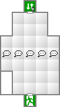
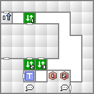
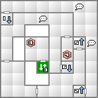
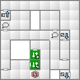
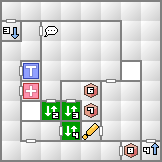
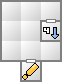
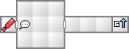

妖精ピクシーと地霊ノッカーは、話しかけることで初回に限り確実に仲魔にすることができる。ノッカーに至っては会話について教えてくれるので聞いておこう。
悪魔に渡すお金やマグネタイトは、お金ならレベルの100倍、マグネタイトならレベルの10倍が相場と教えてくれるが、実際にはさらに1.3倍～1.5倍ぐらい払わないと納得してくれないだろう。とにかく渋ってはいけない。
ここで仲魔にできる悪魔は上記2体に加えて魔獣ギャリートロットのみとなる。ギャリートロットを仲魔にすることができたなら手持ちの悪魔と合体させてみるのもいいかも知れない。
合体させるにはメニューのCOMPからUNITEを選択する。COMP上での合体は数パーセントの確率で事故が発生し、予定外の悪魔か、最悪の場合はロスト、材料を2体とも失ってしまうことになる。心配ならばセーブしてから合体すること。
スプーキーが捕らわれている地下資料室へは、2階でランチにエレベーターを動かしてもらい5階へ。そこから地下まで降りていくことになる。2階や5階の開かない扉は、ゲームが進行すれば開くようになるので今は無視しよう。
妖鬼アズミはラク・カジャを所持し、聖獣ヘケトはマハ・ラギを所持している。アズミのラク・カジャは継承し易い上にゲームの最後まで使える魔法なので、是非ともアズミを作っておきたい。
| 能力 | LV7 HP141 MP35 力04 知03 魔04 耐05 速03 運05 |
|---|---|
| 特技 | 高揚の歌 ショートジャブ |
| 火炎 | 氷結 | 電撃 | 衝撃 | 破魔 | 呪殺 | 万能 |
|---|---|---|---|---|---|---|
| 精神 | 神経 | 魔力 | 打撃 | 斬撃 | 技 | 銃撃 |
| 100 | 100 | 100 | 100 | 無効 | 無効 | 100 |
| 無効 | 無効 | 無効 | 100 | 100 | 100 | 100 |
幽鬼ガキ２体、屍鬼パドロック、邪鬼イッポンダタラを従えている。ここでは妖精ピクシー、地霊ノッカーのみで突入したとして攻略する。
主人公とピクシーで左のガキを倒し、ネミッサは魔法でパドロックをねらう。こいつのアギは少々厄介なので早めに倒しておきたい。ノッカーはタル・ンダをかけまくろう。
キャロルＪの高揚の歌で高揚状態になってしまったら、回復手段は無いので防御させておこう。
妖鬼アズミや聖獣ヘケトがいるなら、ラク・カジャやマハ・ラギを連発しているだけでよい。さらに戦闘が楽になるだろう。
アルゴンNSクリア後は業魔殿に行くことになる。業魔殿ではヴィクトルから「アルバート」「ネオクリア」の2つのインストールソフトを貰う。
ネオクリアは常にマッパーの効果を発揮するソフトだが、マッパーとは違い新月時でも動作する。2メモリ占有してしまうが、3Dダンジョンに慣れないうちは入れておこう。
また、芝浜コアで買い物をすることができるようになる。このゲームでは悪魔を倒してもお金は手に入らないので、お金を得るには所持品を売却するかマグネタイトをお金に換金する必要がある。
マグネタイトの相場はゲーム進行に合わせて変化するので、円安を狙って大量に換金しておくのもいいが、召還用のマグネタイトが足りなかったなどということが無いように注意したい。


2・3のエレベータは利用不可能。

トレジャー[3]は中盤のイベント後に入手可能になる。

トレジャー[5]は中盤のイベント後に入手可能になる。

トレジャー[6][7]は中盤のイベント後に入手可能になる。


| 妖精ピクシー(2) | 魔獣ギャリートロット(6) | 地霊ノッカー(3) |
| 邪鬼グレムリン(5) | 屍鬼フェイスバインド(1) | 幽鬼ガキ(3) |
| 外道スライム(1) |
| 妖精ピクシー(2) | 地霊ノッカー(3) | 屍鬼フェイスバインド(1) |
| 悪霊ポルターガイスト(2) | 外道スライム(1) |